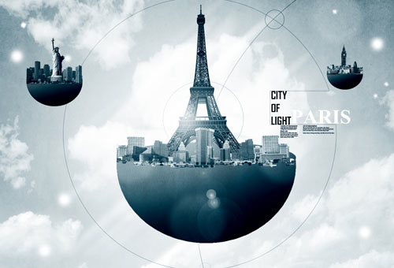
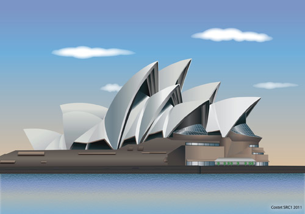
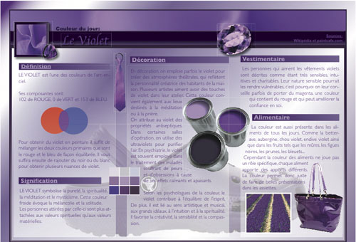
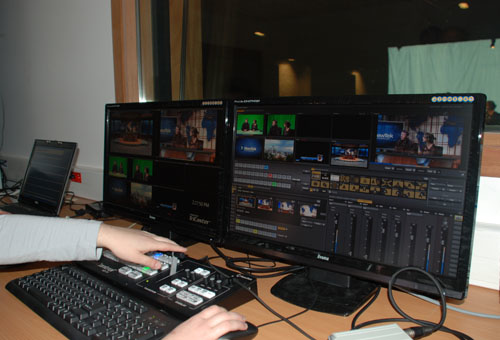
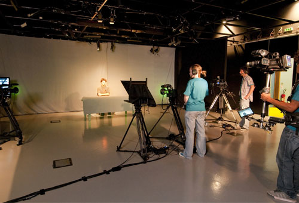

Attirés par la réalisation de produits et de services multimédias, vous êtes ouvert, créatif et doté d’un bon relationnel, le DUT MMI vous ouvre ses portes !
Présentation
Le département Métiers du Multimédia et de l’Internet (MMI) de l’IUT de Saint-Dié-des-Vosges forme en deux ans des techniciens polyvalents, possédant des compétences spécifiques à la conception et à la production de produits et services multimédia alliant innovation technique et esthétique. Dans un contexte d'évolution très rapide du numérique, ces savoir-faire technologiques associés à la maîtrise des enjeux communicationnels et socio-économiques propres aux produits multimédia se révèlent cruciaux.
Organisation de la formation
Dans cette perspective, les enseignements pluridisciplinaires représentent un volume total de 1800 heures en DUT, réparties sur 4 semestres. Equivalant à 30 crédits ECTS (European Credit Transfer System), chaque semestre regroupe deux Unités d’Enseignement (UE), l'une à forte dominante artistique et communicationnelle, l'autre axée sur la culture technologique et le multimédia (image, son, vidéo et internet).
La formation MMI s’adresse aux étudiants issus des séries de baccalauréats généraux et technologiques ainsi qu'à certains baccalauréats professionnels. Elle offre dès la rentrée des enseignements d'adaptation pour une remise à niveau individualisée des étudiants.
Contenu de la formation
Allant de l'infographie 2D et 3D au développement de sites internet, de l'audiovisuel à l'économie et à la gestion des entreprises, de la gestion de projets au web design, le panorama des matières enseignées est large. Ces compétences techniques reposent sur un socle universitaire solide tant en information et communication qu'en culture scientifique.
  La majorité des enseignements réalisés sous forme de petits groupes (TD ou TP) permet un encadrement individualisé et favorise ainsi l’apprentissage. Les cours sont assurés par des enseignants mais aussi par des intervenants professionnels (20% minimum du volume de la formation) dans un environnement numérique performant.
 Une formation professionnalisante
Pour renforcer la dimension professionnalisante de la formation, ces enseignements en présentiel sont complétés au cours des deux ans par un projet de groupe encadré de 300 heures et par deux stages. Le premier d’une durée de 2 semaines minimum s'effectue à la fin de la première année et permet à l'étudiant d’appréhender le monde professionnel et de mettre à profit ses premières compétences. Le second, d'une durée de 9 semaines minimum, se déroule à la fin de la seconde année et lui permettra de mettre en œuvre l'ensemble de ses acquis et de confronter son adaptabilité aux exigences du milieu professionnel. Les missions confiées aux jeunes futurs diplômés concernent le plus souvent la réalisation d'un produit multimédia ou la mise en place d'un outil de communication. Ces stages peuvent s'effectuer dans tous les domaines de la formation, en agence de communication, dans une PME ou dans un grand groupe, au sein d’une association ou d’une structure publique, en France comme à l'étranger.
Et après le DUT MMI ?
Le 4ème semestre intègre un parcours différencié, adapté au choix d'orientation de chaque étudiant en fonction de son projet personnel et professionnel (PPP). A l’issue du DUT MMI, il est possible en effet de viser une intégration professionnelle directe, de poursuivre sa formation en licence professionnelle voire d’envisager de plus longues études au sein d’écoles spécialisées dans le multimédia ou dans le cadre d’une formation universitaire classique (master). Selon le parcours choisi, les compétences complémentaires acquises à la fin du DUT correspondront soit au renforcement de connaissances professionnelles, soit à un approfondissement dans les domaines technologique ou communicationnel et visuel.
• Métiers : Métiers du multimédia et de l'Internet : infographiste, webmestre, webdesigner, intégrateur web, infographiste, chargé de communication, journaliste reporter d'images...
• Les secteurs : Agence de communication, studios graphiques et multimédia, services de communication d’entreprises et d’administrations...Tous type de bac ou équivalence (DAEU) Admission sur dossier
Service Scolarité tél. 03 29 53 60 60 - fax. 03 29 53 60 14 iutsd-scolarite-contact@univ-lorraine.fr